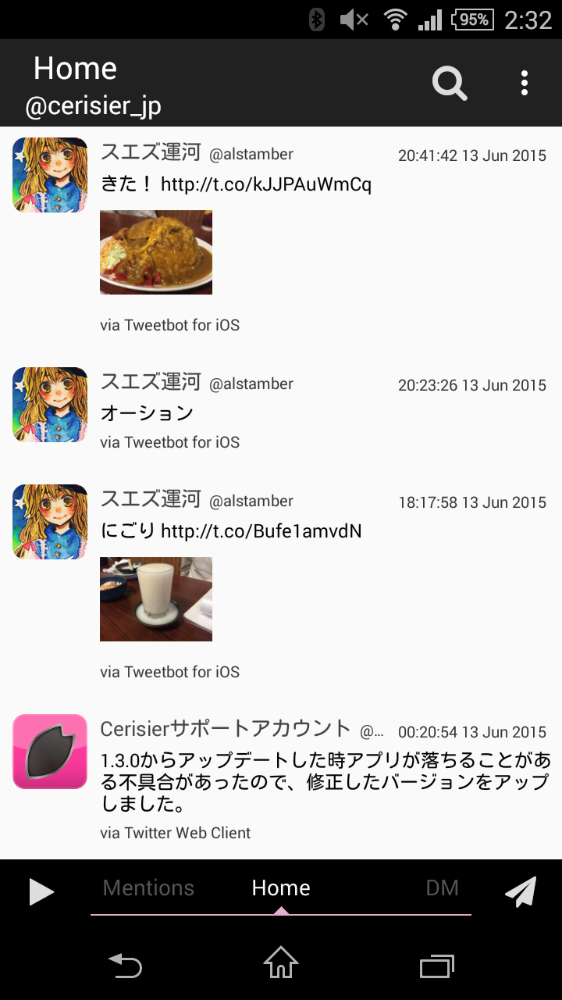
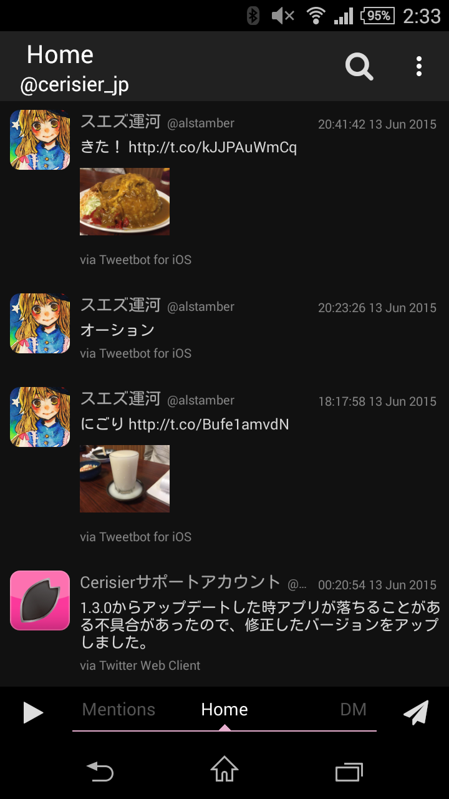

Cerisier
Simple Twitter client for Android
Simple is best
Cerisierはタイムラインを快適に閲覧できることに主眼をおいています。そのため、アプリのデザインは極めてシンプルです。
 
Features
リストや検索タイムラインなどを配置し自分だけのタイムラインを構成
Twitter公式を始め外部の画像サービスの閲覧にも対応
ユーザーストリームに対応
......